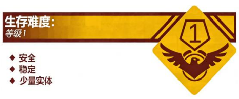

Level 0 - "学校大门"
假如你愉快的假期结束，你最终将会来到学校，
这里只有单调的旧课桌、数不清的老师和令人发狂的作业，
教室上方的 LED 灯管和老旧的风扇全力运作发出的嗡鸣。
倘若你听见有人在对着你怒吼，
愿老天爷保佑你吧，
因为你的假期作业还没有写完……
……

你猛地睁开眼睛，发现自己正处于一个高大的建筑物旁。
旁边来来往往的行人，有和你一样的流浪者，
大家似乎都对现在的情况一无所知，甚至感到害怕：
这里是哪里？
你还想继续思考，但建筑物内却响起了一阵悦耳 的铃声，
站在门口的保安 催促你们进去，
你还想问些什么，
白光一闪……
描述：

外观
Level 0 是学校的起点，它的外观表现于一座由砖块、水泥砌成的建筑，中间有一道铁制电动栏杆将大门封住，“流浪者”可以透过栏杆的缝隙看到校园内部的教学楼。大门旁边有一个挂有“保安亭”标识牌的建筑，但是由于未知原因，流浪者无法透过窗户看到保安亭里面的样貌。校园的一周都被围墙封死，这代表着流浪者只能通过电动栏杆门进入学校内部。
街道
校园的正对面是一条看不到尽头的街道，街道的一端在“上课时间”总是被迷雾笼罩，而在“下课时间”观察街道的尽头则可以看见一座城市，许多流浪者坚信这里就是回家的方向。曾有流浪者尝试在“上课时间”前往这座城市，结果被多名实体驱逐，该流浪者不停往前奔跑，大约 5 分钟后，其意识到前方的城市消失，取而代之的是 Level 0 的校门，而多名“保安”早已看守在门外将其制裁。我们在此提醒各位流浪者，尽量不要在没有任何准备的情况下独自前往远处的“城市”。
特殊效应
Level 0 共有三种状态“开门”、“关门”和“放学”，正如字面所言，这三种状态包含了校门的开启、关闭以及放学时的景色。由于未知原因，Level 0 的状态随时间呈周期性变换，在每天上午 7:00 进行重置：
- 在 7:00 ~ 8:00、13:30~14:30，将会进入“开门”状态，在此时间段内此层级唯一的实体“保安”会守在门口进行站岗，催促位于门口的流浪者尽快进入校门。若流浪者在 8:00 或 14:30 过后依旧没有进入校门，将会在半天内吸引大部分敌对实体的攻击，并被给予“扣分”处理。
- 在 8:00~13:30、14:30~16:40，层级都处于“关门”状态，在此时间段内试图进出校门会被“保安”拦截，需流浪者经过教务人员批准或手持签字后的请假条才能进出校门。尝试以暴力形式破坏校门是不可行的，反而会导致流浪者陷入危险境地。
- 在16:40后，层级将会进入“放学”状态，此时间段内流浪者可以自由进出校门，且“保安”的警惕会显著下降。此时该层级的绝大多数威胁将会消除。
再次强调：在“开门”状态过后将会立即进入“关门”状态，此时此层级的入口和出口会全部关闭，请流浪者务必在指定时间内离开该层，进入学校！
新来的流浪者们，想必你们第一次来到这里肯定会感到很陌生，甚至迷茫，不知道要怎么办。但请不要害怕，这里的一切，你很快就会熟络起来的。 你可能还在疑惑，怎么就突然来到了这个地方，这些疑问，你以后会慢慢明白的。但是，现在你最需要做的并不是思考这些，请你大胆迈入校门（越快越好），寻找那些和你一样陷入这个地狱的同伴，就像你身边的人（或者叫做“流浪者”）一样。
到了这里以后，你就需要接受一个恐怕不是很友好的现实：“上课”。在这个时间段内，你只能在课堂里认真听讲，度过一整天，在离开学校后还需要被监督着写完作业，而这个过程……说实话，就算是我们这样在这里呆了很久的人，未免也会感到十分压抑……唉……
抱歉又跑题了。
下课后，你可以来到道路旁边的小卖部，我们就在这里等着你，为你指引新的道路。若你在学校有什么感到疑惑的地方，可以再次点开这个界面，就像你现在这样。
没错，已经很好了。
需要注意的是：这里存在着一种叫做“实体”的生物，你身边的“老师”、“校长”、“保安”……都被我们称作“实体”，为了防止不可避免的伤害，我们将其整理成了一份列表，你可以随时观看，以应对可能面对的危险。
好了，亲爱的小同学，或是“流浪者”，欢迎你来到学校，请迈出你的第一步，迎接这个不平凡? 的时刻吧！
向你致敬。
实体：
Level 0 中最常见的实体是“保安”，这个实体在“开门”和“放学”两个时段都会守在学校门口，在层级处于“开门”状态负责将流浪者赶入校门中，在“放学”状态时不会对流浪者造成什么威胁。并且，无论现在层级处于什么状态，在流浪者遇到困难的时候还会尝试帮助流浪者。值得注意的是，实体“老师”也会在“开门”之前一段时间和“关门” 之后的一段时间频繁出现。
基地、前哨和社区：
由于该层级的出入口关闭速度极快，且层级区域较小，暂无任何的基地、前哨和社区。如果流浪者想要寻求帮助，可以走进校门前往 Level 1 的临时基地稍作调整。
入口和出口：
入口：在“家”中走向远处的一条标有“school”的街道，会来到此层级。
你和我都是这样来到这里的，不是吗？
出口：目前有以下几种已知的方式离开 Level 0：
不要再为回“家”的事担心了。你我自踏入这里的那一刻起，注定无法挽回。
就算你想尽办法离开校门，终将会来到这里的。
认真地投入这片区域吧。
或许……你会依赖上它，
[记录结束]